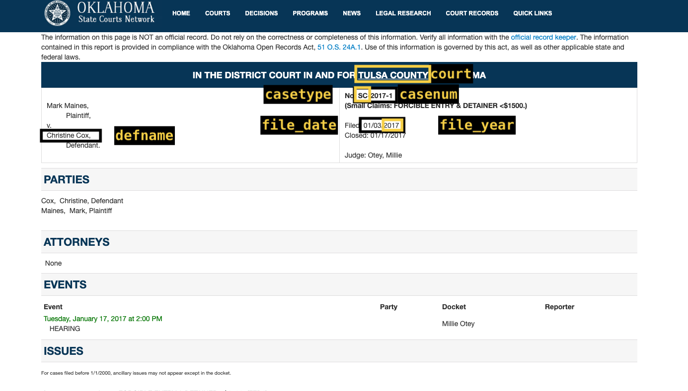

03 OSCN data
oscn-tables.RmdThe Oklahoma State Courts Network (OSCN) holds information on all types of criminal and civil cases filed in District Courts across Oklahoma. For 13 counties, including the 6 largest by population, the information available is extensive and structured consistently. Those 13 counties are:
- Adair County (Stilwell)
- Canadian County (El Reno)
- Cleveland County (Norman)
- Comanche County (Lawton)
- Ellis County
- Garfield County (Enid)
- Logan County (Guthrie)
- Oklahoma County (Oklahoma City)
- Payne County (Stillwater)
- Pushmataha County
- Roger Mills County
- Rogers County (Claremore)
- Tulsa County (Tulsa)
The relative ease of using data collected from OSCN allows us to perform more reliable and granular analysis. For this reason, we will begin a new project using this data rather than from ODCR.
Collection method
The oscn_scrape() function, included in the ojo R package, collects data from a given case and stores it in the OJO database. The function visits a case page (example here) and attempts to recognize types of data in the tables it finds in the page’s HTML, puts the data into a dataframe in R, then uploads it. See function documentation for further details.
Case numbers
Each case filed in a District Court is given a case number following a straightforward pattern:
[Two letter case type abbreviation]-[Year of filing]-[Sequential number of filing in District Court of filing]
For example, criminal misdemeanors are given the abbreviation “CM”, so the first misdemeanor case filed in Adair County in 2020 is numbered CM-2020-1. The first misdemeanor case filed in Pushmataha County in 2020 is also numbered CM-2020-1.
In the OJO database, case numbers follow the same pattern, but we add filler zeroes to make all case numbers the same length. CM-2020-1 appears as CM-2020-00001 in the OJO database, for instance.
OSCN Data
Collection method
OSCN data are scraped from OSCN using the ojo R package.
oscn_ tables
All tables containing OSCN data begin with the prefix oscn_. Below are the data dictionaries for each table, followed by screenshots showing where each variable comes from on a case record.
oscn_caseinfo
| Table | Variable | Description |
|---|---|---|
| oscn_caseinfo | oscn_ci_id | Unique citation id |
| oscn_caseinfo | court | county court where case was processed |
| oscn_caseinfo | casenum | court specific case number |
| oscn_caseinfo | casetype | case type (felony, misdemeanor, civil) |
| oscn_caseinfo | file_year | year case was filed |
| oscn_caseinfo | file_date | date case filed |
| oscn_caseinfo | close_date | date case closed |
| oscn_caseinfo | judge | judge assigned to case |

oscn_caseinfo variables
oscn_atts
| Table | Variable | Description |
|---|---|---|
| oscn_atts | oscn_att_id | Case specific unique attorney id (contains case number) |
| oscn_atts | court | county court where case was processed |
| oscn_atts | casenum | court specific case number |
| oscn_atts | casetype | case type (felony, misdemeanor, civil) |
| oscn_atts | file_year | year case was filed |
| oscn_atts | att_name | Name of attorney |
| oscn_atts | att_barno | Attorney bar number |
| oscn_atts | att_address | Attorney address |
| oscn_atts | rep_party | Party represented by attorney |

oscn_atts variables
oscn_citations
| Table | Variable | Description |
|---|---|---|
| oscn_citations | oscn_cit_id | Unique citation id |
| oscn_citations | court | county court where case was processed |
| oscn_citations | casenum | court specific case number |
| oscn_citations | casetype | case type (felony, misdemeanor, civil) |
| oscn_citations | file_year | year case was filed |
| oscn_citations | arr_agency | Arresting agency |
| oscn_citations | loc_off | Location offense took place |
| oscn_citations | county | county court where case was processed |
| oscn_citations | viol_type | violation type |
| oscn_citations | veh_make | vehicle make |
| oscn_citations | veh_model | vehicle model |
| oscn_citations | veh_tag | vehicle tag number |
| oscn_citations | veh_tag_yr | year of tag expiration |
| oscn_citations | veh_tag_issuer | State where vehicle tag was issued |
| oscn_citations | accident | Was citation issued as a result of an accident (yes/no) |
| oscn_citations | acc_inj | If an accident occurred, was there an injury (yes/no) |
| oscn_citations | acc_prop | if an accident occurred, was there damage to property (yes/no) |
| oscn_citations | bond_amt | bond amount |


oscn_civ_disps
| Table | Variable | Description |
|---|---|---|
| oscn_civ_disps | oscn_civdisp_id | Unique OSCN id number |
| oscn_civ_disps | court | county court where case was processed |
| oscn_civ_disps | casenum | court specific case number |
| oscn_civ_disps | casetype | case type (felony, misdemeanor, civil) |
| oscn_civ_disps | file_year | year case was filed |
| oscn_civ_disps | file_date | date case filed |
| oscn_civ_disps | defname | legal name of defendant |
| oscn_civ_disps | iss_no | issue number |
| oscn_civ_disps | iss_desc | issue discription as filed |
| oscn_civ_disps | iss_plaint | issue filed by |
| oscn_civ_disps | disp_date | date issue filed |
| oscn_civ_disps | disp | issue as disposed |
| oscn_civ_disps | disp_type | issue type as disposed |

oscn_crim_disps
| Table | Variable | Description |
|---|---|---|
| oscn_crim_disps | oscn_crimdisp_id | Unique OSCN id number |
| oscn_crim_disps | court | county court where case was processed |
| oscn_crim_disps | casenum | court specific case number |
| oscn_crim_disps | casetype | case type (felony, misdemeanor, civil) |
| oscn_crim_disps | file_year | year case was filed |
| oscn_crim_disps | defname | legal name of defendant |
| oscn_crim_disps | ct_no | Corresponding charge/count number |
| oscn_crim_disps | ct_code | Count code as filed |
| oscn_crim_disps | ct_desc | count description as filed |
| oscn_crim_disps | ct_stat | count statute as filed |
| oscn_crim_disps | off_date | offense date |
| oscn_crim_disps | disp | count as disposed |
| oscn_crim_disps | disp_date | disposition date |
| oscn_crim_disps | disp_type | count type as disposed |
| oscn_crim_disps | disp_code | count code as disposed |
| oscn_crim_disps | disp_desc | count description as disposed |
| oscn_crim_disps | disp_stat | count statute as disposed |

oscn_crim_disp variables

oscn_crim_disp variables
oscn_events
| Table | Variable | Description |
|---|---|---|
| oscn_events | oscn_ev_id | Unique event identification number |
| oscn_events | court | county court where case was processed |
| oscn_events | casenum | court specific case number |
| oscn_events | defname | legal name of defendant |
| oscn_events | event_date | date of corresponding case event |
| oscn_events | event_weekday | day of the week the corresponding case event took place |
| oscn_events | event_time | time the corresponding case event took place |
| oscn_events | event_desc | Description of case event |
| oscn_events | casetype | case type (felony, misdemeanor, civil) |
| oscn_events | file_year | year case was filed |

oscn_events variables
oscn_mins_*
To make querying more efficient, tables containing docket minutes (oscn_mins_*) are split by year and casetype. For example, all minutes for felony cases in 2016 are stored in oscn_mins_2016CF. The variables are the same in each of these tables.
| Table | Variable | Description |
|---|---|---|
| oscn_mins | oscn_min_id | Unique minute number |
| oscn_mins | court | county court where case was processed |
| oscn_mins | casenum | court specific case number |
| oscn_mins | casetype | case type (felony, misdemeanor, civil) |
| oscn_mins | defname | legal name of defendant |
| oscn_mins | file_year | year case was filed |
| oscn_mins | min_date | Date for corresponding court docket minute |
| oscn_mins | min_code | Court docket minute code |
| oscn_mins | min_desc | Court docket minute description |
| oscn_mins | fee_amt | fee amount for corresponding court docket minute |
| oscn_mins | ct_no | Corresponding charge/count number |
| oscn_mins | min_row | minute row (used to create unique minute id) |

oscn_mins variables
oscn_party
| Table | Variable | Description |
|---|---|---|
| oscn_party | oscn_par_id | Unique OSCN party id number |
| oscn_party | court | county court where case was processed |
| oscn_party | casenum | court specific case number |
| oscn_party | casetype | case type (felony, misdemeanor, civil) |
| oscn_party | file_year | year case was filed |
| oscn_party | def_id | unique defendant id number |
| oscn_party | defname | legal name of defendant |
| oscn_party | def_alias | Alias or alternate names defendant is known by |

oscn_party variables
oscn_party_names
| Table | Variable | Description |
|---|---|---|
| oscn_party_names | oscn_pn_id | Unique OSCN party name id |
| oscn_party_names | court | Unique OSCN id number |
| oscn_party_names | casenum | court specific case number |
| oscn_party_names | casetype | case type (felony, misdemeanor, civil) |
| oscn_party_names | file_year | year case was filed |
| oscn_party_names | party_type | Party type (plaintiff/defendant) |
| oscn_party_names | party | Name of party |

oscn_party_names variables
oscn_party_address
| Table | Variable | Description |
|---|---|---|
| oscn_party_address | oscn_pad_id | Unique party address id number |
| oscn_party_address | court | county court where case was processed |
| oscn_party_address | casenum | court specific case number |
| oscn_party_address | def_id | unique defendant id number |
| oscn_party_address | rec_date | Date information was recorded |
| oscn_party_address | def_address | address of defendant residence |
| oscn_party_address | def_zip | zip code of defendant residence |
| oscn_party_address | casetype | case type (felony, misdemeanor, civil) |
| oscn_party_address | file_year | year case was filed |

oscn_party_address variables
oscn_party_profile
| Table | Variable | Description |
|---|---|---|
| oscn_party_profile | oscn_pp_id | Unique (OJO-generated) OSCN party profile id number |
| oscn_party_profile | court | county court where case was processed |
| oscn_party_profile | casenum | court specific case number |
| oscn_party_profile | def_id | unique (OSCN-generated) defendant id number |
| oscn_party_profile | rec_date | Date information was recorded |
| oscn_party_profile | def_mob | month and year of birth |
| oscn_party_profile | casetype | case type (felony, misdemeanor, civil) |
| oscn_party_profile | file_year | year case was filed |

oscn_party_profile variables
oscn_pays_*
| Table | Variable | Description |
|---|---|---|
| oscn_pays | oscn_pay_id | Unique (OJO-generated) OSCN pay id number |
| oscn_pays | court | county court where case was processed |
| oscn_pays | casenum | court specific case number |
| oscn_pays | casetype | case type (felony, misdemeanor, civil) |
| oscn_pays | file_year | year case was filed |
| oscn_pays | defname | legal name of defendant |
| oscn_pays | pay_date | Date of payment |
| oscn_pays | pay_code | Payment code |
| oscn_pays | pay_acct | payment account |
| oscn_pays | pay_amt | Payment amount |
| oscn_pays | adj_amt | adjusted amount |
oscn_updates
The oscn_updates table contains information on the dates and times at which the case was scraped.
| Table | Variable | Description |
|---|---|---|
| oscn_updates | oscn_update_id | Unique OJO update id |
| oscn_updates | court | county court where case was processed |
| oscn_updates | casenum | court specific case number |
| oscn_updates | casetype | case type (felony, misdemeanor, civil) |
| oscn_updates | file_year | year case was filed |
| oscn_updates | updated | date and time data was last updated from OSCN |
| oscn_updates | available | Documents if previously available records are no longer available on OSCN, any record that is no longer available is assumed to have been expunged |